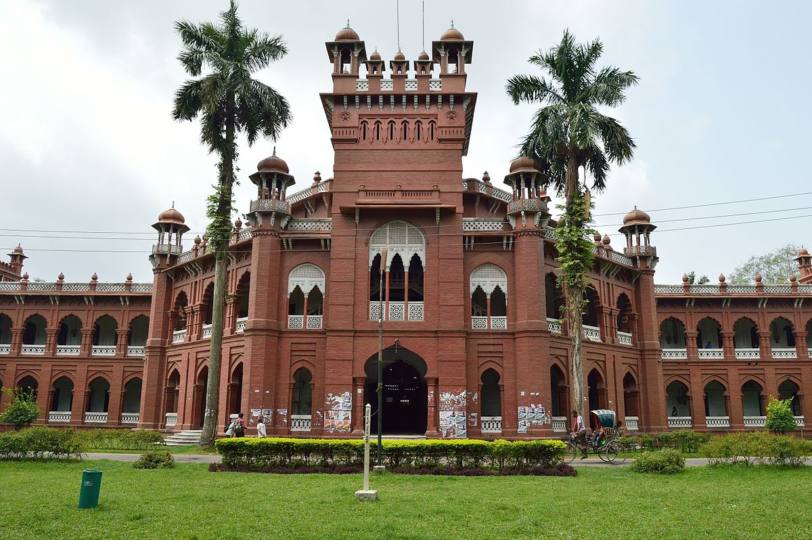
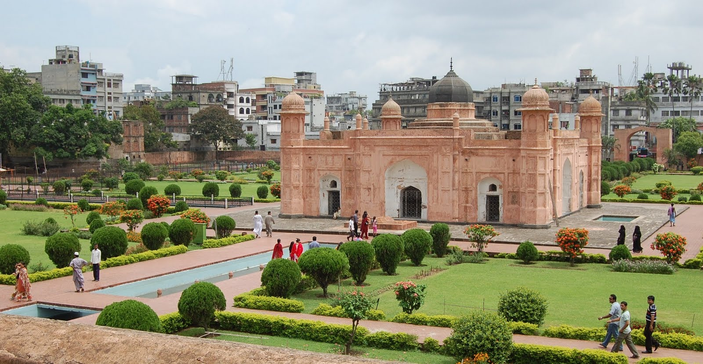
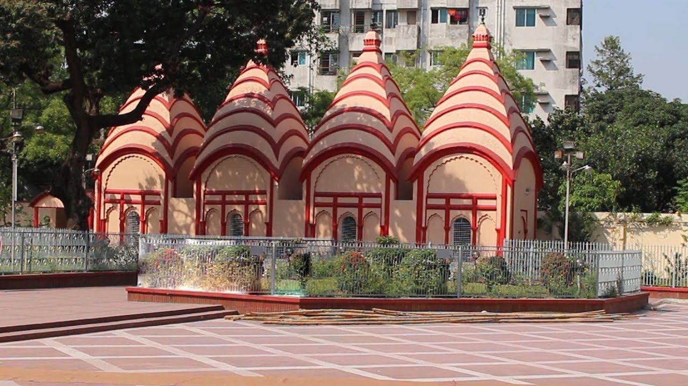
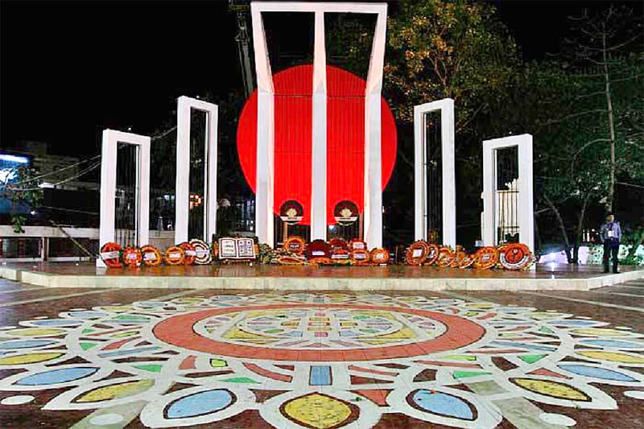

ঢাকা

ঢাকা বিশ্ববিদ্যালয় (সংক্ষেপে ঢাবি, বা ডিইউ) ঢাকার শাহবাগে অবস্থিত বাংলাদেশের একটি স্বায়ত্তশাসিত বিশ্ববিদ্যালয়; যা বহু-অনুষদভিত্তিক গবেষণা বিশ্ববিদ্যালয় হিসেবে পরিচিত। ১৯২১ সালে তদানীন্তন ব্রিটিশ ভারতে অক্সব্রিজ শিক্ষা ব্যবস্থা অনুসরণে এটি স্থাপিত হয়। সূচনালগ্নে বিভিন্ন প্রথিতযশা বৃত্তিধারী ও বিজ্ঞানীদের দ্বারা কঠোরভাবে মান নিয়ন্ত্রিত হবার প্রেক্ষাপটে এটি প্রাচ্যের অক্সফোর্ড নামে স্বীকৃতি পায়।
ঢাকা বিশ্ববিদ্যালয়ের শিক্ষকবৃন্দ সবচেয়ে বেশিসংখ্যক বাংলাদেশ বিজ্ঞান একাডেমি পদক লাভ করেছেন। এছাড়াও, এটি বাংলাদেশের একমাত্র বিশ্ববিদ্যালয় হিসেবে এশিয়াউইকের পক্ষ থেকে শীর্ষ ১০০ বিশ্ববিদ্যালয়ে জায়গা করে নেয়।। এটি এশিয়ার সেরা ১০০টি বিশ্ববিদ্যালয়ের মধ্যে ৬৪তম।।এখানে প্রায় ৩৭,০০০ ছাত্র-ছাত্রী এবং ১,৮০৫ জন শিক্ষক রয়েছে।
ব্রিটিশ ঔপনিবেশিক শাসনকালে স্বাধীন জাতিসত্ত্বার বিকাশের লক্ষ্যে বিশ শতকের দ্বিতীয় দশকে ঢাকা বিশ্ববিদ্যালয় প্রতিষ্ঠার প্রক্রিয়া শুরু হয়। ব্রিটিশ ভারতে তৎকালীন শাসকদের অন্যায্য সিদ্ধান্তে পূর্ববঙ্গের মানুষের প্রতিবাদের ফসল হচ্ছে এই ঢাকা বিশ্ববিদ্যালয়। এ সম্পর্কে প্রখ্যাত ইতিহাসবিদ মুনতাসীর মামুন ঢাকা স্মৃতি বিস্মৃতির নগরী গ্রন্থে লিখেছেন,
বঙ্গভঙ্গ রদের ক্ষতিপূরণ হিসেবে প্রতিষ্ঠা করা হয়েছিল ঢাকা বিশ্ববিদ্যালয়। লর্ড লিটন যাকে বলেছিলেন স্পেল্নডিড ইম্পিরিয়াল কমপেনসেশন। পূর্ববঙ্গ শিক্ষাদীক্ষা, অর্থনীতি সব ক্ষেত্রেই পিছিয়ে ছিল। বঙ্গভঙ্গ হওয়ার পর এ অবস্থার খানিকটা পরিবর্তন হয়েছিল, বিশেষ করে শিক্ষার ক্ষেত্রে।
১৯৫২ সনের ভাষা আন্দোলন থেকে শুরু করে ১৯৭১ এর স্বাধীনতা যুদ্ধ পর্যন্ত বিশ্ববিদ্যালয়ের রয়েছে গৌরবময় ভূমিকা। স্বাধীনতা যুদ্ধে এ বিশ্ববিদ্যালয় পাকিস্তানি হানাদার বাহিনীর আক্রমণের শিকার হয়। এতে এ বিশ্ববিদ্যালয়ের শিক্ষক-কর্মকর্তা-কর্মচারী এবং ছাত্র-ছাত্রী সহ শহীদ হয়েছেন বহুজন। বিশ্ববিদ্যালয়ের শিক্ষক ও ছাত্রছাত্রীদের কঠোর নিয়ন্ত্রণে রাখার লক্ষ্যে ১৯৬১ সালে স্বৈরাচারী আইয়ুব খানের সরকার প্রবর্তিত অর্ডিন্যান্স বাতিলের জন্য ষাটের দশক থেকে শিক্ষকদের দাবির পরিপ্রেক্ষিতে স্বাধীনতার পর গণপ্রজাতন্ত্রী বাংলাদেশের জাতীয় সংসদ উক্ত অর্ডিন্যান্স বাতিল করে ঢাকা বিশ্ববিদ্যালয় অর্ডার-১৯৭৩ জারি করে। বর্তমানে বিশ্ববিদ্যালয় এই অর্ডার দ্বারা পরিচালিত হয়ে আসছে। ১৯৩০-৩৪ জগন্নাথ কলেজ-এর অধ্যক্ষ ললিত মোহন চট্টোপাধ্যায়, ঢাকা মাদ্রাসার (বর্তমান কবি নজরুল সরকারি কলেজ) তত্ত্বাবধায়ক শামসুল উলামা আবু নসর মুহম্মদ ওয়াহেদ, মোহাম্মদ আলী (আলীগড়), প্রেসিডেন্সি কলেজের অধ্যক্ষ এইচ.এইচ.আর.জেমস, প্রেসিডেন্সি কলেজের অধ্যাপক সি.ডব্লিউ. পিক, এবং সংস্কৃত কলেজের অধ্যক্ষ সতীশ্চন্দ্র আচার্য। ১৯১৩ সালে প্রকাশিত হয় নাথান কমিটির ইতিবাচক রিপোর্ট এবং সে বছরই ডিসেম্বর মাসে সেটি অনুমোদিত হয়। ১৯১৭ সালে গঠিত স্যাডলার কমিশনও ইতিবাচক প্রস্তাব দিলে ১৯২০ সালের ১৩ মার্চ ভারতীয় আইন সভা পাশ করে 'দি ঢাকা ইউনিভার্সিটি অ্যাক্ট (অ্যাক্ট নং-১৩) ১৯২০'। পরবর্তী ঘটনাপ্রবাহ সম্পর্কে রফিকুল ইসলামের ঢাকা বিশ্ববিদ্যালয়ের ৮০ বছর গ্রন্থ থেকে জানা যায়, নাথান কমিটি রমনা অঞ্চলে ৪৫০ একর জায়গায় ঢাকা বিশ্ববিদ্যালয় স্থাপনের প্রস্তাব দেয়। এই জায়গায় তখন ছিল ঢাকা কলেজ, গভর্নমেন্ট হাউস, সেক্রেটারিয়েট ও গভর্নমেন্ট প্রেসসমূহ।
ইনস্টিটিউট সমূহ:
শিক্ষা ও গবেষণা ইন্সটিটিউট
পরিসংখ্যান গবেষণা ও শিক্ষণ ইনস্টিটিউট
ব্যবসায় প্রশাসন ইন্সটিটিউট
পুষ্টি ও খাদ্য বিজ্ঞান ইন্সটিটিউট
সমাজকল্যাণ ও গবেষণা ইন্সটিটিউট
সমাজকল্যাণ ও গবেষণা ইন্সটিটিউট
তথ্য প্রযুক্তি ইন্সটিটিউট
লেদার প্রকৌশল ও প্রযুক্তি ইন্সটিটিউ
স্বাস্থ্য অর্থনীতি ইন্সটিটিউট

লালবাগের কেল্লা (কিলা আওরঙ্গবাদ) ঢাকার দক্ষিণ-পশ্চিমাঞ্চলে বুড়িগঙ্গা নদীর তীরে অবস্থিত একটি অসমাপ্ত মুঘল দুর্গ। এটির নির্মাণকাজ শুরু হয়েছিল ১৬৭৮ সালে, মুঘল সুবাদার মুহাম্মদ আজম শাহ কর্তৃক, যিনি ছিলেন সম্রাট আওরঙ্গজেবের পুত্র এবং পরবর্তীতে নিজেও সম্রাট পদপ্রাপ্ত হয়েছিলেন। তার উত্তরসুরী, মুঘল সুবাদার শায়েস্তা খাঁ ১৬৮০ সালে নির্মাণকাজ পুনরায় শুরু করেন, কিন্তু শেষ করেননি।
সম্রাট আওরঙ্গজেবের ৩য় পুত্র, মুঘল রাজপুত্র আজম শাহ বাংলার সুবাদার থাকাকালীন ১৬৭৮ সালে এটার নির্মাণকাজ শুরু করেন। তিনি বাংলায় ১৫ মাস ছিলেন। দুর্গের নির্মাণকাজ শেষ হবার আগেই মারাঠা বিদ্রোহ দমনের জন্য পিতা সম্রাট আওরঙ্গজেব তাকে দিল্লি ডেকে পাঠান। এসময় একটি মসজিদ ও দরবার হল নির্মাণের পর দুর্গ নির্মাণের কাজ থেমে যায়। সুবাদার শায়েস্তা খাঁ ১৬৮০ সালে পুনরায় বাংলার সুবাদার হিসেবে ঢাকায় এসে দুর্গের নির্মাণকাজ পুনরায় শুরু করেন। ১৬৮৪ সালে এখানে শায়েস্তা খাঁর কন্যা ইরান দুখত রাহমাত বানুর (পরী বিবি) মৃত্যু ঘটে। কন্যার মৃত্যুর পর শায়েস্তা খাঁ এ দুর্গটিকে অপয়া মনে করেন এবং ১৬৮৪ খ্রিস্টাব্দে অসমাপ্ত অবস্থায় এর নির্মাণকাজ বন্ধ করে দেন। লালবাগের কেল্লার তিনটি প্রধান স্থাপনার একটি হল পরী বিবির সমাধি। শায়েস্তা খাঁ ঢাকা ত্যাগ করার পর এটি এর জনপ্রিয়তা হারায়। ঢাকা থেকে মুর্শিদাবাদে রাজধানী স্থানান্তর করা হয়েছিল; এটিই ছিল প্রধান কারণ। রাজকীয় মুঘল আমল সমাপ্ত হওয়ার পর দুর্গটি পরিত্যক্ত অবস্থায় রয়ে যায়। ১৮৪৪ সালে এলাকাটি "আওরঙ্গবাদ" নাম বদলে "লালবাগ" নাম পায় এবং দুর্গটি পরিণত হয় লালবাগ দুর্গে ।

ঢাকেশ্বরী জাতীয় মন্দির বাংলাদেশের রাজধানী ঢাকা শহরে অবস্থিত একটি মন্দির। ঢাকার নামকরণ হয়েছে "ঢাকার ঈশ্বরী" অর্থাৎ ঢাকা শহরের রক্ষাকর্ত্রী দেবী হতে। এই মন্দিরটি ঢাকা বিশ্ববিদ্যালয়ের সলিমুল্লাহ হলের দক্ষিণ-পশ্চিম প্রান্তে অবস্থিত।ঢাকেশ্বরী মন্দিরের ইতিহাস সম্পর্কে নানা কাহিনী প্রচলিত আছে। ধারণা করা হয় যে, সেন রাজবংশের রাজা বল্লাল সেন ১২শ শতাব্দীতে এটি প্রতিষ্ঠা করেন। তবে সেই সময়কার নির্মাণশৈলীর সাথে এর স্থাপত্যকলার মিল পাওয়া যায় না বলে অনেক ইতিহাসবিদ মনে করেন। বিভিন্ন সময়ে এই মন্দিরের গঠন ও স্থাপনার নানা ধরনের পরিবর্তন সাধন করা হয়েছে।এটা ব্যাপকভাবে বিশ্বাস করা হয় রাণী, রাজা বিজয় সেনের স্ত্রী স্নান করার জন্য লাঙ্গলবন্দ গিয়েছিলেন। ফিরে আসার সময় তিনি একটি পুত্রকে জন্ম দেন, যিনি বল্লাল সেন বলে ইতিহাসবিদদের কাছে পরিচিত হন। সিংহাসনে উঠার পর, বল্লাল সেন তাঁর জন্মস্থানকে মহিমান্বিত করার জন্য এই মন্দিরটি নির্মাণ করেছিলেন। কিংবদন্তীগণ বলছেন যে বল্লাল সেন একবার জঙ্গলে আচ্ছাদিত দেবতার স্বপ্ন দেখেছিলেন। বল্লাল সেন সেখানে দেবীকে আবিষ্কৃত করেন এবং একটি মন্দির নির্মাণ করান, মূর্তিটি ঢাকা ছিল বলে ঢাকেশ্বরী নামকরণ হয় । কিংবদন্তীগণ যা বর্ণনা করেন তা হিন্দু ধর্মীয়দেরকে ঢাকেশ্বরী কে ঢাকার প্রসিদ্ধ দেবী হিসেবে বিবেচনা করে, যা দেবী দুর্গা বা আদীপরামহাশক্তির একটি মূর্তি বা রূপ। দেবী ঢাকেশ্বরী আসল ৮০০ বছর পুরোনো বিগ্রহটি কলকাতার কুমারটুলি অঞ্চলে দুর্গাচারণ স্ট্রিট বর্তমানে বিরাজ করছে, মন্দিরের নাম শ্রী শ্রী ঢাকেশ্বরী মাতার মন্দির। এখন যে বিগ্রহটি ঢাকার ঢাকেশ্বরী মন্দিরে আছে তা হলো ঢাকায় মূল মূর্তির প্রতিরূপ। দেশ ভাগের সময় কয়েক লক্ষ ভিটেমাটি হারা মানুষের সঙ্গের তিনিও ঢাকার থেকে কলকাতায় এলেন। দেশভাগ-পরবর্তী দাঙ্গার সময় সম্ভাব্য আক্রমণ এবং লুন্ঠনের হাত থেকে দেবীকে রক্ষা করতে ঢাকার মূল বিগ্রহটিকে গোপনে এবং দ্রুততার সঙ্গে ১৯৪৮-এ কলকাতায় নিয়ে এসেছিলেন রাজেন্দ্রকিশোর তিওয়ারি (মতান্তরে প্রহ্লাদকিশোর তিওয়ারি) এবং হরিহর চক্রবর্তী। বিশেষ একটি বিমানে ঢাকেশ্বরী আসল বিগ্রহটি কলকাতায় নিয়ে আসা হয়েছিল। কলকাতায় বিগ্রহটি আনার পর প্রথম দু'বছর হরচন্দ্র মল্লিক স্ট্রিটে দেবেন্দ্রনাথ চৌধুরির বাড়িতে দেবী পূজিতা হন। পরে ১৯৫০ নাগাদ ব্যাবসায়ী দেবেন্দ্রনাথ চৌধুরী কুমোরটুলি অঞ্চলে দেবীর মন্দির নির্মাণ করে দেন ও প্রতিষ্ঠা করে দেবীর নিত্য সেবার জন্য কিছু দেবোত্তর সম্পত্তি দান করেছিলেন এবং অদ্যাবধি এখানেই দেবী পূজিতা হয়ে চলেছেন।
দেবী বিগ্রহের উচ্চতা দেড় ফুটার মতো , দেবীর দশ হাত, কাত্যানী মহিষাসুরমর্দিনী দূর্গা রূপেই তিনি অবস্থান করছেন। পাশে লক্ষী, সরস্বতী ও নিচে কার্তিক ও গণেশ। বাহন রূপে পশুরাজ সিংহ দন্ডায়মান যার ওপর দাঁড়িয়ে দেবী মহিষাসুরকে বধ করেছেন। মানসিংহ নাকি এই বিগ্রহ ঢাকায় প্রতিষ্ঠা করে আজমগড়ের এক তিওয়ারি পরিবারকে সেবায়েত নিযুক্ত করেছিলেন। ১৯৪৬ সালে সেই পরিবারের বংশধরেরাই কলকাতায় এসে পুনরায় সেবায়েত নিযুক্ত হন, এখনো তারাই দেবীর নিত্য সেবা করেন। এই ঢাকেশ্বরী দেবীর পূজা পদ্ধাতিও বাংলার চিরপুরাতন পদ্ধাতির চেয়ে আলাদা। মন্দিরের বর্তমান পুরোহিত শক্তিপ্রসাদ ঘোষাল জানালেন, শারদীয়া দুর্গাপূজার সময় দেবীর পূজা হয় উত্তর ভারতের নবরাত্রিক বিধি মেনে। দেশভাগের বেদনাময় পরিণামের কারণেই তাঁর এখানে আসা এবং মন্দিরের প্রতিষ্ঠা। দেবীকে যেভাবে অলংকারহীন এবং প্রায় বিবস্ত্র অবস্থায় লুকিয়ে আনা হয়েছিল, তার ছবিও এই মন্দিরে সংরক্ষিত আছে। তাই ঢাকার মত কলকাতার ঢাকেশ্বরী মন্দিরটিরও ঐতিহাসিক গুরুত্ব কিছু কম নয়। অথচ মন্দিরগৃহটির আজ জরাজীর্ণ দশা। অপরিসর রাস্তা, ঝোপঝাড় ঘেরা। সংস্কারের অভাবে হতশ্রী এই মন্দিরেই দেবীর অনিন্দ্যসুন্দর আদি বিগ্রহটির নিত্যপূজা হয়। সেবাইত এবং পূজারি খেদের সঙ্গে কলকাতাবাসীর উদাসীনতা এবং সরকারি সাহায্যের অভাবের কথা জানালেন। মন্দিরের দৈনন্দিন কাজে আর্থিক অপ্রতুলতার কথাও বললেন বিষণ্ণ মনে।আজও আসেন পূর্ববঙ্গের বহু ভক্ত হয়তো ফেলে আসা ভিটেমাটির ছোয়া পেতে।দেবীর মন্দিরটি মাতা সিদ্ধেশ্বরী কালী মন্দিরে থেকে কিছুটা এগিয়ে যাকেই জিজ্ঞাসা করবেন সেই দেখিয়ে দেবেে।বাংলাদেশের ঢাকায় অবস্থিত ঢাকেশ্বরী মন্দির জাতীয় মন্দিরের তকমা পেয়েছে। সেদেশের সংখ্যালঘু হিন্দু সম্প্রদায়ের ধর্মাচরণের নানাবিধ কাজকর্ম ওই মন্দিরকে কেন্দ্র ক'রে পরিচালিত হয়। সাধারণ মানুষের পাশাপাশি রাজনৈতিক এবং অন্যান্য নানা ক্ষেত্রের গণ্যমান্য মানুষের ভিড় লেগেই থাকে শ্রীশ্রীঢাকেশ্বরী জাতীয় মন্দিরে। বহু ঘাতপ্রতিঘাত, লুন্ঠন, অগ্নিসংযোগের ইতিহাস বুকে নিয়ে সেই মন্দির আজও সগৌরবে দাঁড়িয়ে আছে। ঢাকার ঢাকেশ্বরী মন্দিরের প্রচারের আলোয় ঢাকা পড়ে গেছে কলকাতার ঢাকেশ্বরী মাতার মন্দির। শোভাবাজার ছাড়িয়ে কুমোরটুলির এক অপরিসর গলিতে ইতিহাসের সাক্ষী হয়ে নীরবে নিভৃতে বিরাজমান এই মন্দিরখানি। অথচ ঢাকার ঢাকেশ্বরী মন্দিরের আদি বিগ্রহ কিন্তু এখানেই প্রতিষ্ঠিত। কলকাতার এই ঢাকেশ্বরী মাতার মন্দিরটির ঐতিহাসিক গুরুত্বের কথা বিচার ক'রে সরকারি এবং বেসরকারি উদ্যোগে মন্দির সংস্কারের কাজে দ্রুত হস্তক্ষেপের প্রয়োজন। নয়ত অচিরেই দেশভাগের যন্ত্রণা নিয়ে দাঁড়িয়ে থাকা একটি ইতিহাস শুধুমাত্র আমাদের নির্লিপ্ততায় হারিয়ে যাবে।
 প্রথম শহীদ মিনার নির্মিত হয়েছিল অতিদ্রুত এবং নিতান্ত অপরিকল্পিতভাবে। ঢাকা মেডিকেল কলেজের ছাত্ররা ১৯৫২ খ্রিস্টাব্দের ২৩ ফেব্রুয়ারি বিকেলে স্মৃতিস্তম্ভ নির্মাণ শুরু করে রাত্রির মধ্যে তা’ সম্পন্ন করে। শহীদ মিনারের খবর কাগজে পাঠানো হয় ঐ দিনই। শহীদ বীরের স্মৃতিতে - এই শিরোনামে দৈনিক আজাদ পত্রিকায় ছাপা হয় শহীদ মিনারের খবর। মিনারটি তৈরি হয় মেডিকেলের ছাত্র হোস্টেলের (ব্যারাক) বার নম্বর শেডের পূর্ব প্রান্তে। কোণাকুণিভাবে হোস্টেলের মধ্যবর্তী রাস্তার গা-ঘেঁষে। উদ্দেশ্য বাইরের রাস্তা থেকে যেন সহজেই চোখে পড়ে এবং যে কোনো শেড থেক বেরিয়ে এসে ভেতরের লম্বা টানা রাস্তাতে দাঁড়ালেই চোখে পড়ে। শহীদ মিনারটি ছিল ১০ ফুট উচ্চ ও ৬ ফুট চওড়া। মিনার তৈরির তদারকিতে ছিলেন জিএস শরফুদ্দিন (ইঞ্জিনিয়ার শরফুদ্দিন নামে পরিচিত), ডিজাইন করেছিলেন বদরুল আলম; সাথে ছিলেন সাঈদ হায়দার। তাদের সহযোগিতা করেন দুইজন রাজমিস্ত্রী। মেডিকেল কলেজের সম্প্রসারণের জন্য জমিয়ে রাখা ইট, বালি এবং পুরান ঢাকার পিয়ারু সর্দারের গুদাম থেকে সিমেন্ট আনা হয়। ভোর হবার পর একটি কাপড় দিয়ে ঢেকে দেওয়া হয় মিনারটি। ঐ দিনই অর্থাৎ ২৪ ফেব্রুয়ারি সকালে, ২২ ফেব্রুয়ারির শহীদ শফিউরের পিতা অনানুষ্ঠানিকভাবে শহীদ মিনারের উদ্বোধন করেন। ২৬ ফেব্রুয়ারি সকালে দশটার দিকে শহীদ মিনার উদ্বোধন করেন আজাদ সম্পাদক আবুল কালাম শামসুদ্দিন। উদ্বোধনের দিন অর্থাৎ ২৬ ফেব্রুয়ারি পুলিশ ও সেনাবাহিনী মেডিকেলের ছাত্র হোস্টেল ঘিরে ফেলে এবং প্রথম শহীদ মিনার ভেঙ্গে ফেলে। এরপর ঢাকা কলেজেও একটি শহীদ মিনার তৈরি করা হয়, এটিও একসময় সরকারের নির্দেশে ভেঙ্গে ফেলা হয়। অবশেষে, বাংলাকে পাকিস্তানের অন্যতম রাষ্ট্রভাষার স্বীকৃতি দেবার পরে ১৯৫৭ খ্রিস্টাব্দে কেন্দ্রীয় শহীদ মিনারের নির্মাণ কাজ শুরু হয়। এর নকশা করেছিলেন ভাস্কর হামিদুজ্জামন। কিন্তু ১৯৫৮তে ফিল্ড মার্শাল আইয়ুব খান পাকিস্তানে সামরিক আইন জারীর পর কেন্দ্রীয় শহীদ মিনারের কাজ বন্ধ হয়ে যায়। পরবর্তীকালে লেফটিন্যাণ্ট জেনারেল আযম খানের আমলে এর নির্মাণ কাজ পুনরায় শুরু করা হয়। ঢাকা বিশ্ববিদ্যালয়ের উপাচার্য অধ্যাপক ড. মাহমুদ হোসেনের নেতৃত্বে গঠিত একটি কমিটি এর নির্মাণ কাজের তত্ত্বাবধান করে। মূল নকশা ছেঁটে-কেটে দ্রুত নির্মাণ কাজ শেষ করা হয়। মূল নকশার ফোয়ারা ও নভেরা আহমেদ এর ম্যুরাল ইত্যাদি বাদ পড়ে। নির্মাণ কাজ শেষ হয় ১৯৬৩ খ্রিস্টাব্দের শুরুতে। ১৯৬৩ খ্রিস্টাব্দের ২১শে ফেব্রুয়ারি ভাষা আন্দোলনের অন্যতম শহীদ ব্যক্তিত্ব আবুল বরকতের মাতা হাসিনা বেগম কর্তৃক নতুন শহীদ মিনারের উদ্বোধন করা হয়।